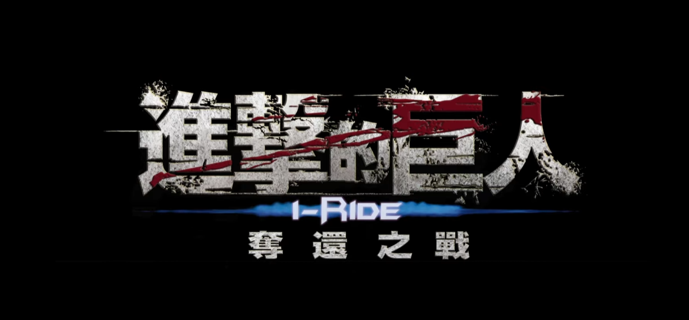

Attack on Titan: iRide is an immersive theme park attraction that allows guests to experience the high-flying action of the "Vertical Maneuvering Equipment" from the iconic anime series. The project required a seamless blend of dynamic animation, spatial sound, and physical motion to simulate the intense combat against Titans.
During my time at Artlord Studio, I worked on the layout and previs for this attraction. My primary responsibility was choreographing the high-speed camera movements to ensure they provided a thrilling experience while remaining technically viable for the iRide motion system. I also assisted with the overall art direction and creative inputs to capture the gritty, high-stakes aesthetic of the franchise.

The core challenge was "velocity." We needed to simulate the feeling of swinging through a post-apocalyptic city at breakneck speeds. We used high-detail previs to iterate on acceleration curves and vantage points, ensuring the Titian encounters felt both massive and immediate.
Role: Creative Input, Layout, Previz
Type: 4D Theme Park Ride / Previsualisation
Year: 2014
Studio: Artlord Studio
Tools & Tech: Autodesk Maya, Adobe Creative Suite, Theme Park Motion Pipelines
{kind=link}